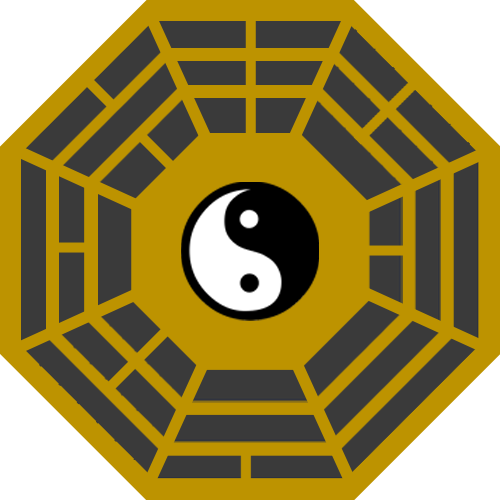

東方管制塔開発部からのお知らせです．
東方管制塔開発部は，東方管制塔 EX のアイコンを，
次期バージョン(ver.0.12.0-release.3)から新しくすることを決定いたしました．

東方管制塔 EX の新アイコン
新アイコンは，霧雨魔理沙の使用しているアイテムである「ミニ八卦炉」をモチーフとしています．
東方原作の実行ファイルのアイコンが霧雨魔理沙であることや，
ミニ八卦炉が東方に関するモチーフとしてもよく知られていることを鑑み，
ミニ八卦炉を新デザインとして採用しました．
また，開発部は，
東方管制塔 Lite のアイコンや，
開発部ロゴマークのデザインも改めることを検討しています．